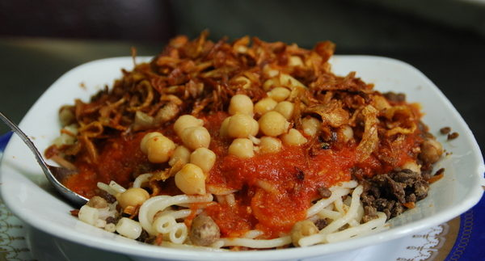

THE EGYPTIAN DISH KOSHARY
Koshari (also spelled, Kushari) is the national dish of my birthplace, Egypt. By far one of my favorite things to eat--EVER! No matter how far I've traveled, I will always crave a humble bowl of koshari as served in the streets of Egypt.
What is Koshari?
Koshri is another one of those genius solutions to using up pantry staples. It is a cousin to the Middle Eastern Mujadara. In a nutshell, it is a comforting bowl of simple pantry staples: spiced lentils and rice, combined with chickpeas and small pasta. All smothered in a tomato sauce that's been spiked with vinegar (out-of-this-world tasty, by the way!) Then...wait for it...it's topped with savory, crispy thin fried onion rings.

Ingredients:-
- 1 ½ cup brown lentils, picked over and well-rinsed
- 1 ½ cup medium-grain rice, rinsed, soaked in water for 15 minutes, drained
- ½ tsp each salt and pepper
- ½ tsp coriander
- 2 cups elbow pasta
- Cooking oil
- Water
- 1 15-oz can chickpeas, rinsed, drained and warmed
Steps:-
- Cook the lentils. Bring lentils and 4 cups of water to a boil in a medium pot or saucepan over high heat. Reduce the heat to low and cook until lentils are just tender (15-17 minutes). Drain from water and season with a little salt. (Note: when the lentils are ready, they should not be fully cooked. They should be only par-cooked and still have a bite to them as they need to finish cooking with the rice).
- Now, for the rice. Drain the rice from its soaking water. Combine the par-cooked lentils and the rice in the saucepan over medium-high heat with 1 tablespoon cooking oil, salt, pepper, and coriander. Cook for 3 minutes, stirring regularly. Add warm water to cover the rice and lentil mixture by about 1 ½ inches (you'll probably use about 3 cups of water here). Bring to a boil; the water should reduce a bit. Now cover and cook until all the liquid has been absorbed and both the rice and lentils are well cooked through (about 20 minutes). Keep covered and undisturbed for 5 minutes or so.
- Now make the pasta. While the rice and lentils are cooking, make the pasta according to package instructions by adding the elbow pasta to boiling water with a dash of salt and a little oil. Cook until the pasta is al dente. Drain.
- Cover the chickpeas and warm in the microwave briefly before serving.